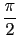

suivant: Transformer les arccos en
monter: Les expressions trigonométriques
précédent: Simplifier : simplify simplifier
Table des matières
Index
Transformer les arccos en arcsin : acos2asin
acos2asin a comme argument une expression trigonométrique.
acos2asin transforme cette expression en remplaçant :
arccos(x) par
 - arcsin(x).
On tape :
acos2asin(acos(x)+asin(x))
On obtient après simplification :
pi/2
Documentation de giac écrite par Renée De Graeve